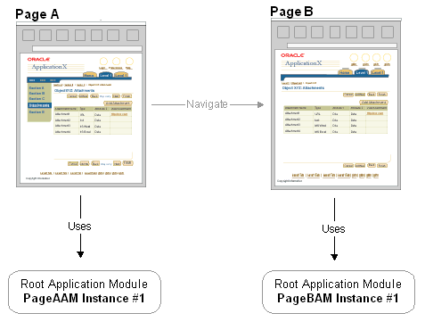
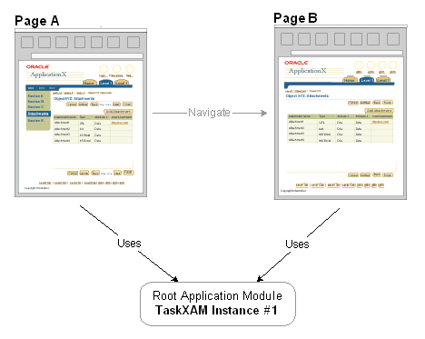
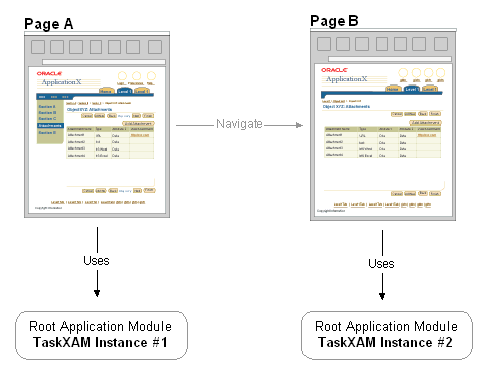
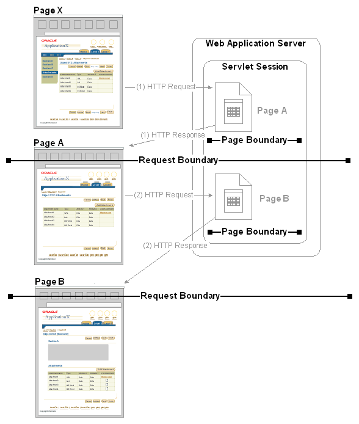
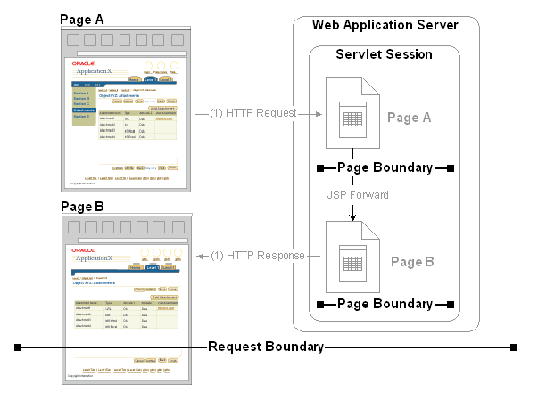
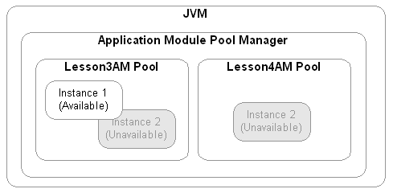

概述
这个文档用于描述OA Framework状态管理架构，包括缓存应用系统用户数据和从页面间值传递的机制。
结构预览
主要状态管理组：

根应用模块（数据库会话和事务状态）
如OA Framework 页面解析一文中描述的，每个OA Framework页面与一个根应用模块关联，根应用模块提供事务环境和JDBC数据库连接。
注意： OA Framework中，一个数据库会话与一个JDBC连接关联。
根应用模块是任何OA Framework模块的中枢，因为核心应用数据（存储在BC4J视图，实体对象，等等）和页面web bean层级结构自动缓存于根应用模块的oracle.apps.fnd.framework.OADBTransaction对象中。
警告： 使用浏览器后退按钮将导致应用模块状态丢失。可以查看Supporting the Browser Back Button一文。
任何存储于事务中的数据可以被任何共享同一个根应用模块实例的页面访问（在页面间导航时使用下面描述的方式保留应用模块）。OA Framework提供了方法用于从事务中存储、获取和移除值。可以在控制器（client）和模型（server）代码中访问单一的事务对象，这些工具在oracle.apps.fnd.framework.webui.OAPageContext(controller中)和OADBTransaction(model中)类可以访问。
根应用模块保留
缺省情况下，当用户从一个页面导航到另一个页面（比如使用GET请求或JSP forward）时，OA Framework渲染新的页面，与前一个页面关联的应用模块实例被“释放”，一个新的实例请求被发送到应用模块池。
导航到新的页面时，缺省情况下的原页面的根应用模块将被释放：

注意： OA Framework在表单提交（POST）期间不会释放应用模块，除非你显式的在控制器中释放应用模块。比如，如果用户对表格中的数据排序或在表格数据中导航——两个动作隐式的提交了页面表单——页面的根应用模块实例被自动保留。
在页面间保留应用模块
在多个页面处理同一个任务时相关的页面需要参与同一个虚拟事务。这时，不同页面需要关联到同一个根应用模块实例。
相关页面共同同一个根应用模块（和事务）：

为达到这个目的，必须执行下面的操作：
-
申明各个页面关联同一个类型的根应用模块。
-
设置应用模块的保留标记。通过指定URL参数retainAM=y设置模块保留标记。对于GET请求。当新的页面被渲染时（注意，OA Framework对于POST请求将一直保留应用模块而不管retainAM参数的值）。如果设置为“Y”，前一个页面的应用模块实例将被保留。如果设置为“N”（或不指定，缺省为“N“），OA Framework将释放所有应用模块——包括到达这点前任何可能显式申明为保留的。
-
也可以在调用JSP forward OAPageContext中的方法时设置这个参数。
警告： 不能简单的让不同页面关联相同的根应用模块。如果忘记设置retainAM标记，每个页面仍将使用不同的应用模块实例和事务，即使这些页面关联的是同一个类型的应用模块。
注意： 技术上来说，这依赖于应用模块池的状态。Page B可能获取到与Page A使用的同一个物理应用模块。但是，对象的状态将完全被重置，就像被新创建的一样。从这个观点来看，可以看作一个“新的实例”。
两个页面引用相同类型的应用模块，但没有设置Retain AM标记：

同样，将retainAM标记设置为“Y“——但没有将页面的根应用模块设置为相同的类型。这将产生不同的应用模块实例（每个页面一个），各自有自己的事务。
有条件的保留和释放应用模块
有些情况下，你需要通过一个条件来决定是否保留或释放应用模块。这时，你可以让应用模块实现oracle.apps.fnd.framework.webui.OAReleaseListener接口，详细描述见Javadoc。
警告： Oracle Application开发人员应该在使用这个接口时通知OA Framework开发团队。不正确的使用这个接口将导致内存泄漏。OA Framework团队正在跟踪这个问题。
显式的释放应用模块
可以显式的通过代码在OA Framework处理之前释放根应用模块。可以在页面控制器中调用OAPageContext.releaseRootApplicationModule()方法，OA Framework将在页面渲染完成后尽快释放这个页面的根应用模块，而不是等到下次应用模块请求时。
根应用模块保留的使用场景
下列情况下推荐保留／释放应用模块。
情况 || 推荐操作 无关的分离的任务 | 当导航到两个不相关的页面时不保留应用模块。比如一连串的不相关的管理任务，它们是独立运行的（即使这们与同一个菜单项目关联），保留应用模块是不必要的。 多页面流 | 当在相关的页面间导航时，这些页面合作完成同一个完整的任务处于单个事务中时，保留应用模块 相关页面（虚拟事务） | 当在关联同一个业务对象（即使页面为用户设置了不同的提交点）的不同任务间的相关页面间导航时，如果UI关联得比较紧密则保留应用模块。比如，一个模块可以查询、查看、更新、删除、打印写单则应该使应用模块保留 多页面流中使用分支事务 | 有一个多页面流使用了分支事务，比如，在创建定单时创建供应商时，在主流程中保留应用模块，而在创建供应商的页面使用OAPageContext.releaseRootApplicationModule方法释放模块。
注意： 在介绍OA Framework的钝化和JDBC池化/回收之前，鼓励开发人员经常的释放应用模块，因为保留JDBC连接是一个昂贵的开销。在了解钝化功能后这不再是个问题。
Servlet Session
可以在servlet session中缓存小型的，可序列化的对象（OA Framework限定为字符串，数字和日期类型）
注意： 使用session缓存那些需要在多个页面设置或访问的简单值，这些页面可以有不同的根应用模块。（事务缓存不在这个范围内）。由于session变量失效时间较长，且没有好的事件可以释放内存，因此应该把session作为最后一种缓存选择。
技巧： 隐藏域通常不被推荐使用。因此，OA Framework当前的菜单实现（一些菜单发送GET请求而不是POST请求），并不总是能在用户点击菜单时添加额外的值，根应用绑定是交叉的。
可以使用OAPageContext put()，get()和remove*()方法访问session变量值。
Oracle 应用用户Session
当用户登录到OA Framework application时，OA Framework将创建一个AOL/J oracle.apps.fnd.comn.WebAppsContext对象和一个基于session的浏览器cookie以跟踪Oracle Application context信息的key。Oracle Application context中的信息包括当前的责任，组织机构id和用户的各种属性，比如：用户名，用户id，雇员id等等。
-
cookie包含了一个加密的key用于标识存储于Application数据库中的一个session行。
-
每次请求时WebAppsContext获取这个key的值，并使用它查询当前session状态。
-
Oracle Application用户session与一个servlet session关联，但是它有自己的生命周期和超时特性。
-
通常，Oracle Application用户session的生存时间比servlet session更长。servlet session超时快一些。
-
一个Oracle Application用户session可能关联到多个servlet session中。比如，当用户在创建开支报表时，打电话的过程中servlet session超时了，然后在Oracle Application用户session超时前恢复工作。
-
如果Oracle Application用户session超时了，只要用户没有关闭浏览器窗口（因此基于浏览器session的coolie并没有丢失）并且没有人删除ICX_SESSION表中相应的session行，用户可以在提示登录后重新登录并恢复她之前停止时的事务点。
如果你需要访问任何存储于Oracle Application user session的信息，可以从OAPageContext(在控制器代码中)或OADBTransaction（在模型代码中）获得。
应用状态（Application Context State）
当不同访问OAPageContext（Java服务层代码或PL/SQL）时，可以使用Application context存储一些状态信息。使用WebAppsContext.setSessionAttribute(java.lang.String pName,java.lang.String pValue)方法。
页面环境（Page Context）
每次请求接收一个页面时，OA Framework创建一个OAPageContext并持续到新页面处理完成。明确，OAPageBean的主要能力是在页面后面处理创建OAPageContext。
请求和页面边界
web应用的工作单元是一个请求／响应对：浏览器提交一个请求，servlet处理请求并返回一个响应。发送一个响应表示单个请求的结束，或者说一个已经完成的请求和一个新请求之间的“边界”。
同样，当OAPageBean完成一个页面处理时，这就是当前页面和新页面的“边界”。
因此，在下面的简单场景中当用户从Page X转到Page A然后再转到Page B，这里有两个请求边界：第一个是Page X和Page A之间，第二个位于Page A和Page B之间。这里也有两个页面边界位于Page X和Page A，Page A和Page B之间。
请求和页面边界相同：

有些情况下，请求和页面边界是不相同的。比如下面的JSP Forward情况：
-
用户如上面的图中所示的，从Page X导航到Page A。
-
当在Page A上时，用户选择了一个控件，Page A的代码在决定在响应中显示哪个页面前进行计算。浏览器发出请求到Page A，OA Framework进行处理，并为页面创建了一个OAPageContext。一旦Page A的处理完成后，第一个页面的边界到达了，已经如下面的图所示的。
-
在Page A的代码中，开发人员执行用户选择的控件并发出JSP Forward到Page B。而不是在这时提供了一个HTTP响应，因为我们不想显示Page A，OA Framework首先处理Page B，并为这个页面创建一个新的OAPageContext对象。一旦Page B的处理完成，第二个页面边界到达。
-
由于Page B现在必须显示给用户了，一个HTTP响应被发送给浏览器。这时响应边界到达了。
在JSP Forward情况下，请求界面和页面界面不同：

明确这个区别是很重要的：
-
请求参数生存于请求生命周期中，它可以跨越多个页面边界。想像下面的情况：
-
用户选择了Page X中的一个链接导航到Page A。Page A的URL包含了参数foo=bar
-
Page A请求JSP Forward到Page B。现在，尽管已经在新页面中了，但请求仍然包含了foo=bar。
-
如果你不希望请求参数在执行JSP Forward后仍然存在，你必须的替换它。比如，在调用OAPageContext.setForward*()之前，简单的重新设置foo=X。
-
注意： 不能从请求中移除参数。
-
技巧： 比较好的处理方式是将参数值设置为一个不需要的值，这样代码可以忽略它。而不要简单的将值设置为""。
-
由于page context和request不是一一对应的，一些人可以会对从OAPageContext中访问请求参数觉得迷惑。只要记住每个页面是一个独立的实体，从它的观点来看，OAPageContext表现了request。
-
当了钝化的细节后，将更清楚明白页面和请求边界的区别，甚至是受钝化的影响也不同。
请求Request
对每个HTTP request都将创建一个请求对象。这个对象包含下面的应用状态：
-
任何URL参数，不论是POST或GET请求
-
如果浏览器发出一个POST请求：任何form字段值
-
如果浏览空对空发出POST请求：web bean和事件名称与用户选择的动作或控件组件关联。比如：如果用户选择了“GO”按钮执行一个查询，请求将包含以这个按钮命名的web bean，以便你能获取到是这个按钮被按下了而做出响应。
使用OAPageContext getParameter*()方法获取任何请求值。不能直接与request对象交互。
设置request变量值（首选的两个页面间通讯的方法）时，你可以使用下面介绍的方法。参考视图实现和控制器实现的相关信息。
使用隐藏域
可以在JDeveloper中设置域的style属性为formValue。运行时，是使用oracle.apps.fnd.framework.webui.beans.form.OAFormValueBean来实现的。
在JSP Forward或客户端重定向时指定值
当显式的forward到新页面时，使用OAPageContext setForward*()方法或调用OAPageContext.sendRedirect()请求客户端重定时，可以随意设置请求的参数值。
调用OAPageContext.putParameter()指定参数值
OAPageContext包含了一个putParameter()方法，它可以在页面是过程中传递值到web bean结构中。通过调用putParameter()指定的值技术上来说并不是加到request中的，而是存储于特殊的页面缓存中。
技巧： 可以把这个方法与servlet 2.1 API中的HttpServletRequest.setAttribute()方法等同起来。
申明URL参数
可以在JDeveloper中开发时指定URL参数。
警告： URL长度是受限的；对于添加大量URL参数要谨慎注意它的长度。由于URL对于用户是可见的，要注意加密敏感的数据。
状态持久化模型（'钝化Passivation'）
OA Framework应用主要是事务导向的。许多事务跨越了多个页面，这些页面的事务需要某种机制保持到用户完成相关的任务。
HTTP协议天生就是无状态的；它不保留任何应用状态信息或保证状态的持久化。甚至，即使是在JVM实例提供的servlet session失败或servlet session超时后，应用状态也将丢失，挂起的事务也不能恢复。
OA Framework具有透明的保存和恢复客户端状态的能力——即使servlet session超时（未来的版本将提供JVM失效的支持）：
-
将应用状态保存到辅助介质上的过程叫作钝化（passivation）。
-
从辅助介质上恢复状态的过程叫作激活（activation）。
OA Framework当前提供了下面的状态管理功能。
-
可伸缩的应用当资源占用比较高的情况下，需要为新的服务线程创建新的资源，OA Framework将保存挂起的线程的状态并回收它们的资源以供其它用户使用。当挂起的用户线程被唤醒后，保存的应用状态被恢复。简单来说，内在被重新分配给JDBC连接，应用模块，用户session而不会影响用户的使用。
-
Servlet session超时恢复servlet session允许超时，而不需要强制用户启动一个新的事务。（将来，这个功能将扩展为支持中间层失效）
应用模块池
为提高性能和可伸缩性，OA Framework池化（缓存和重用）应用模块。重用比重新创建更有效。
-
每个JVM有一个应用模块池管理器，它包含并管理各个应用模块池。
-
每个应用模块池包含多个同一应用模块的实例。
-
应用模块池中的实例被设计为可以置为可用或不可用（现在被称为"checked out"）。
-
只有根应用模块被池化；嵌套的应用模块不会被池化为根应用模块的子应用模块。
应用模块池：

Comments